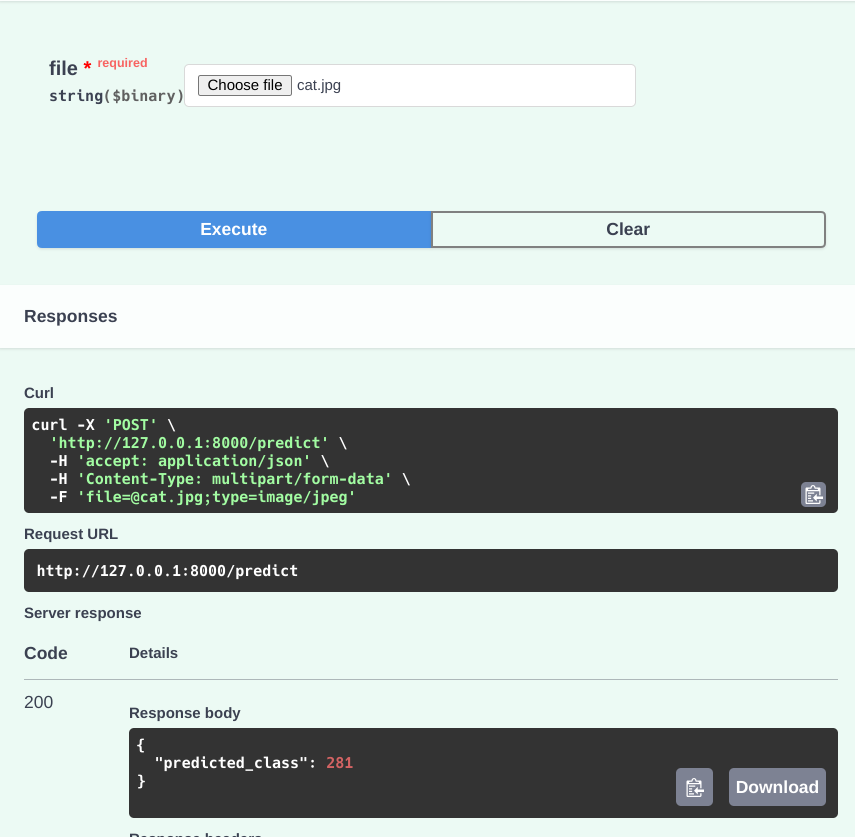

Introduction to FastAPI
Today, I delved into FastAPI, a cutting-edge web framework designed for building APIs with Python. It piqued my interest because of its reputation for speed, ease of use, and robust integration with Python’s type system and also cause I have been looking for some time for a way to deploy my ML applications easily and with minimalistic code as I’m not a web developer and struggle with that part. Upon looking around on the internet, I discovered that people have been using something called FastAPI along with Streamlit for faster model deployment for demonstration purposes and so I decided to have a look at it. Here’s what I discovered about FastAPI and why it’s particularly compelling for developing APIs, especially for machine learning tasks.
Exploring FastAPI
Well, in order to explore about FastAPI, I did what every other sane developer would do. I opened up YouTube and started looking at video tutorials along with looking at its documentation. I got to know that FastAPI uses Starlette for its web components and Pydantic for data validation and serialization, leveraging Python’s type hints for seamless integration and enhanced development experience. (YIPPEEE! This also meant less learning for me as I could already use some of the things I knew from Python without the need to learn some completely different framework or language). Thus, I chose to explore it further.
Advantages That Caught My Attention
- Performance: FastAPI harnesses asynchronous programming to handle high volumes of concurrent requests efficiently. This capability is crucial for applications that require real-time data processing or predictive model serving. (which could be beneficial for us when we are working with our ML models)
- Developer-Friendly: As someone relatively new to API development, I appreciate FastAPI’s simplicity and its ability to automatically generate API documentation based on Python type hints. This feature not only saves time but also improves code readability and maintainability along with the fact that I don’t need a lot of time to learn it as it is fairly easy and straight-forward.
- Data Validation: Using Pydantic, FastAPI ensures robust data validation, helping to catch errors early in the development process. This is especially important when handling diverse data inputs in machine learning applications and one of the most important reason I chose FastAPI and think that I will stick with it for future projects too.
- Ecosystem Integration: FastAPI seamlessly integrates with other Python libraries and frameworks, allowing me to extend its functionality with database integration, authentication mechanisms, and more, without complicating the core API logic. For example, I saw a lot of people using
SQLAcademyonline with FastAPI relatively easily along with other plotting libraries. As someone who works with Python extinsively, this makes my work even more easy and manageable rather than depending on cross-platform libraries for getting the things done.
Why FastAPI Stands Out For Machine Learning
FastAPI’s strengths make it particularly suitable for building APIs around machine learning models:
-
Efficiency: Its async design enables efficient handling of multiple requests concurrently, which is crucial for high-performance machine learning applications.
-
Data Safety: With Pydantic’s strong data validation capabilities, FastAPI ensures that the data fed into machine learning models meets expected formats and types, reducing the risk of runtime errors.
-
Scalability: FastAPI’s performance-oriented architecture and async capabilities support scalability, making it well-suited for applications that may experience increasing traffic or computational demands over time.
In summary, my exploration of FastAPI today has highlighted its potential to streamline API development, particularly for machine learning tasks where speed, data validation, and scalability are paramount. In the following sections, I look forward to diving deeper into implementing CRUD operations and integrating machine learning models effectively using FastAPI along with the code snippets I used for learning it.
Seting up FastAPI
After looking around at some YouTube videos and getting a rough idea of what to do, the first thing I did was to try it out for myself.
Getting Started with FastAPI
- Setting up FastAPI is surprisingly straightforward. All one needs is Pip to install FastAPI and Unicorn, an ASGI server needed to run FastAPI applications.
pip install fastapi uvicorn
- One can also install fastapi with all its dependencies like this:
pip install fastapi[all]
Creating First Hello World FastAPI Project
With FastAPI installed, I created a new directory for my project and created a sample main.py file in it. This could be anything and I’m just naming it main.py for ease.
from fastapi import FastAPI
app = FastAPI()
@app.get('/')
def base():
return 'Hello World!'
That’s it. That’s all it takes to run a simple FastAPI endpoint which could handle HTTP GET requests. I’ll break it down for easier understanding:
- Import FastAPI and initalize an instance with it. I used
appbut one can use anything of their choice. - Focus on
@app.get('/'). This decorator tells Python to define a route for handling GET requests to the root URL\of my API. Here,getmeans that it is aGETrequest. In the brackets, we supply the url as well, in this case, it being/or the root. Thus, our API will look something likelocalhost:8008/ - After telling Python about the type of request (get in this case), I also made a function which is executed when a GET request is made to
/. It returns a simpleHello Worldrespone. Again, one can name the function anything rather than usingbase
Running My FastAPI Application
To run the app locally, I used Uvicorn (which we installed earlier along with FastAPI). It is used to serve FastAPI applications.
uvicorn main:app --reload
- Here,
mainis the name of the module (Python file), whereasappis the name of the instance of FastAPI which we initialized in the file and will be using all throughout. --reloadsimply means to enable automatic reloading of the server when changes are made to the code.
After running this, FastAPI started on http://localhost:8000 by default. Navigating to this URL in my web browser displayed the JSON response: {"Hello": "World"}, confirming that my FastAPI application was up and running successfully.

FastAPI’s Interactive Documentation
One of the standout features of FastAPI is its automatic API documentation generation as it comes equipped with something known as Swagger. By navigating to http://localhost:8000/docs in my browser, I accessed the interactive Swagger UI documentation. This interface not only described my API endpoints but also allowed me to interact with them directly, testing different requests and seeing the responses in real-time.
Exploring More Endpoints With FastAPI
After implementing a very simple and straightforward endpoint to test FastAPI’s capabilities and lay the groundwork for more complex functionality, I started experimenting with other endpoints like POST, etc as well.
Add Parameter to Endpoints
FastAPI makes it easy to handle parameters in API endpoints. For instance, I can modify the base() function to accept a name parameter and include it in the response:
@app.get('/')
def base(name: str = "World"):
return f'Hello {name}'
In this updated version:
- The
nameparameter is specified as a query parameter (?name=…) with a default value of “World”. Also note that it only acceptsstrand giving it anything else, like an int, for example will throw up an error (exactly what we talked about earlier as how FastAPI handles data validation seemlessly and without any complicated stuff) - Now, when accessing http://localhost:8000/?name=John, the response will be
"Hello John". - This can further be extended with different functionalities but this is just a simple example on how to enforce data type validation and accepting parameters in our FastAPI GET requests.
Handling POST Requests
To handle HTTP POST requests and accept data, I defined a new endpoint using the @app.post() decorator. This is a simple example from FastAPI’s amazing documentation itself.
from pydantic import BaseModel
class Item(BaseModel):
name : str
descritpion: str = None
price: float
tax: float = None
@app.post('/items/')
def create_item(item: Item):
item_dict = item.dict()
if item.tax:
return f'Price with tax: {item.price} + {item.tax}'
- Here, Item is a
Pydanticmodel that defines the structure of the data expected in the POST request body. It also helps keeping a check on the type of data which interacts with the API like enforcing data types (eg,strfor name and descritpion,floatfor price and tax). Also, note how tax and description are not required arguments and have a default value ofNonejust in case nothing is supplied for that. - The
create_item()function takes anitemparameter oftype Itemand returns a dictionary representation of the item, returning theprice_with_taxif tax is provided.
Testing the Endpoint
To test the newly created POST endpoint, one can use tools like Swagger or Postman. I preferred to use curl as this is a very simple endpoint.
curl -X POST "http://localhost:8000/items/" -H "Content-Type: application/json" -d '{"name": "Example Item", "description": "An example item", "price": 50.0}'
- This sends a POST request to
http://localhost:8000/items/with JSON data representing an item.
CRUD Operations with FastAPI
After exploring some simple get and post requests, I went on to leverage FastAPI’s capabilities to create endpoints for managing data, laying the groundwork for building robust APIs for ML applications later.
Creating Data Models
To begin, I defined Pydantic models to represent the data structure that my API endpoints will handle. Here’s an example of defining a User model:
from pydantic import BaseModel
class User(BaseModel):
id : int
username : str
email : str
full_name : str
- The
Usermodel specifies fields such asid,username,emailandfull name, ensuring type safety and data validation.
Implementing CRUD endpoints
Using FastAPI’s decorators (@app.get, @app.post, @app.put, @app.delete), I implemented CRUD endpoints to perform operations on User data:
- Create (POST): Adding a new user to the database
from typing import List
users = [] # for a simple demonstration
@app.post('/users/', response_model=User)
def create_user(user: User):
users.append(user)
return user
- Read (GET): Retreiving a list of all users or a specific user by ID.
@app.get('/users/', response_model = List[User])
def read_users():
return users
@app.get('/users/{user_id}', response_model = User)
def read_user(user_id : int):
for user in users:
if user.id == user_id:
return user
raise HTTPException(status_code=404, detail = "User not found")
- Update (PUT): Updating an existing user’s information
@app.put('/users/{user_id}', response_model = User)
def update_user(user_id : int, updated_user : User):
for user in users:
if user.id == user_id:
user.username = updated_user.username
user.email = updated_user.email
user.full_name = updated_user.full_name
return user
raise HTTPException(status_code = 404, detail = "User not found")
- Delete (DELETE): Deleting a user from the database
@app.delete('/users/{user_id}', response_model = User)
def delete_user(user_id : int):
for index, user in enumerate(users):
if user.id == user_id:
deleted_user = users.pop(index)
return deleted_user
raise HTTPException(status_code = 404, detail = 'User not found')
Testing CRUD Operations
To test the CRUD operations, I used curl as before:
- Create (POST): Send a POST request with JSON data representing a new user.
curl -X POST "http://localhost:8000/users/" -H "Content-Type: application/json" -d '{"id": 1, "username": "john_doe", "email": "john.doe@example.com", "full_name": "John Doe"}'
- Read (GET): Retrieve all users or a specific user by ID.
curl -X GET "http://localhost:8000/users/"
curl -X GET "http://localhost:8000/users/1"
- Update (PUT): Send a PUT request to update an existing user.
curl -X PUT "http://localhost:8000/users/1" -H "Content-Type: application/json" -d '{"id": 1, "username": "johndoe", "email": "johndoe@example.com", "full_name": "John Doe"}'
- Delete (DELETE): Send a DELETE request to remove a user by ID
curl -X DELETE "http://localhost:8000/users/1"
Integration with Machine Learning Models
Uptil this point, I was just messing around and getting my hands dirty with FastAPI and how to use it. Now, equipped with the knowledge of how to create atleast basic endpoints, I decided to give it a try with a pretrained model from PyTorch Zoo and implemented endpoints to make predictions using that.
Loading a Pre-trained Machine Learning Model
First, I loaded a pre-trained ResNet50 model from PyTorch zoo into my FastAPI app.
import torch
from torchvision import models, transforms
from PIL import Image
from io import BytesIO
import requests
import numpy as np
# Load pretrained model
model = models.resnet50(weights="ResNet50_Weights.DEFAULT")
model.eval()
# Define image transforms
transforms = transforms.Compose([
transforms.Resize((224, 224)),
transforms.ToTensor(),
transforms.Normalize(mean = [0.485, 0.456, 0.406], std = [0.229, 0.224, 0.225])
])
Creating Prediction Endpoints
Next, I defined an endpoint in FastAPI ('/predict/') to handle image classification predictions using the loaded ResNet50 model.
from fastapi import FastAPI, File, UploadFile
from typing import List
import numpy as np
app = FastAPI()
@app.post('/predict')
def predict_image(file: UploadFile = File(...)):
# Process the uploaded file
img = Image.open(BytesIO(file.file.read()))
img = transforms(img) # apply transforms
img = img.unsqueeze(0) # add batch dimension
# Make predictions
with torch.no_grad():
outputs = model(img)
_, predicted = torch.max(outputs, 1)
predicted_class = predicted.item()
return {'predicted_class' : predicted_class}
- Explanation: In this example,
predict_image()accepts an uploaded image file(file: UploadFile), processes it using the defined transformation(transform), and then feeds it into theResNet50 model (model). After making a prediction, it returns the predicted class index(predicted_class).
Testing the Prediction Endpoint
To test the prediction endpoint, use the provided image file (cat.jpg) in Appendix or any other image file you prefer. Here’s how you might test it using Swagger:

Note that the endpoint returns a predicted class of 281. One can map the predicted indexes to the actual labels, but I did not feel like doing so here. On a closer look at the actual index to label dictionary used for ImageNet from here, we find that 281 index indeed represents Tabby Cat which is what we wanted.
Conclusion
To summarize, I started out with trying to learn FastAPI so that I could deploy my ML models fairly easily and this is exactly what I did - from making simple endpoints to being able to make CRUD operations with them and then finally deploying an ML model with them. Now with that said, I did have other things to mention as well but I feel it would make this blog very long and inconvenient to follow along and thus I will be adding the rest of the stuff in Part 2 which could be accessed from here
Appendix
{kind=link}
Photo by Data Scientist